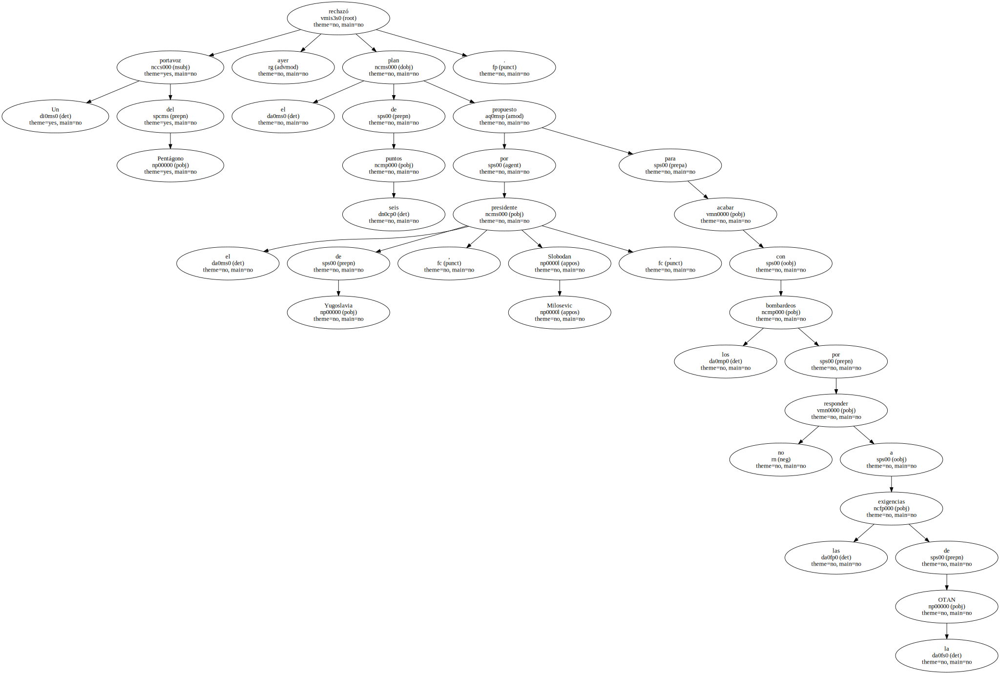
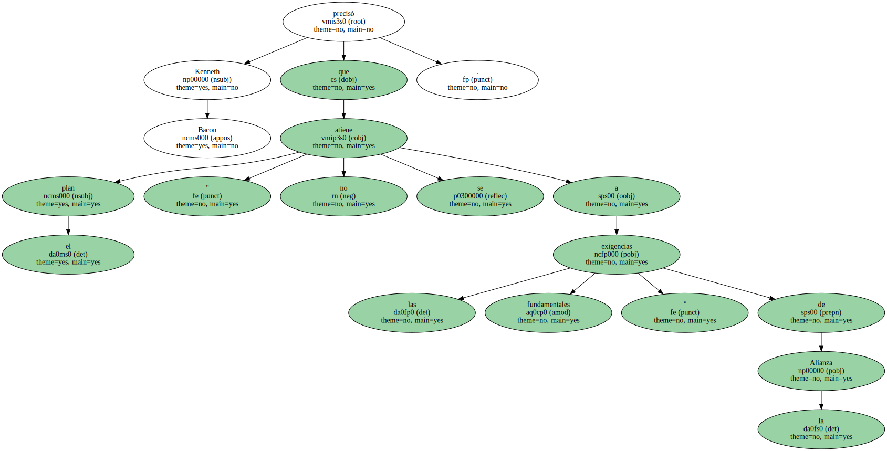
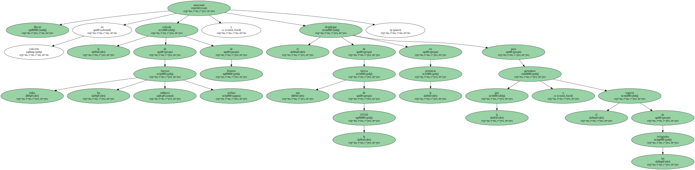
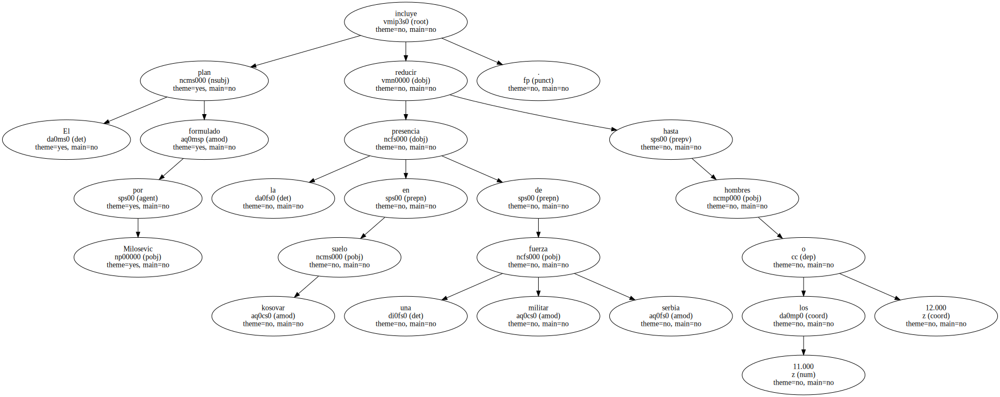

Un portavoz del Pentágono rechazó ayer el plan de seis puntos propuesto por el presidente de Yugoslavia , Slobodan Milosevic , para acabar con los bombardeos por no responder a las exigencias de la OTAN.
Kenneth Bacon precisó que el plan " no se atiene a las exigencias fundamentales " de la Alianza.
Bacon mencionó en concreto la retirada de todas las fuerzas militares serbias de Kosovo y el despliegue de una fuerza de la OTAN en la provincia para garantizar la paz y el regreso de los refugiados.
Las palabras de Bacon reforzaron las pronunciadas 24 horas antes por Joe Lockhart , portavoz de la Casa Blanca , quien dijo que las últimas propuestas de Milosevic eran " claramente inadecuadas ".

El plan formulado por Milosevic incluye reducir la presencia en suelo kosovar de una fuerza militar serbia hasta los 11.000 o 12.000 hombres.
